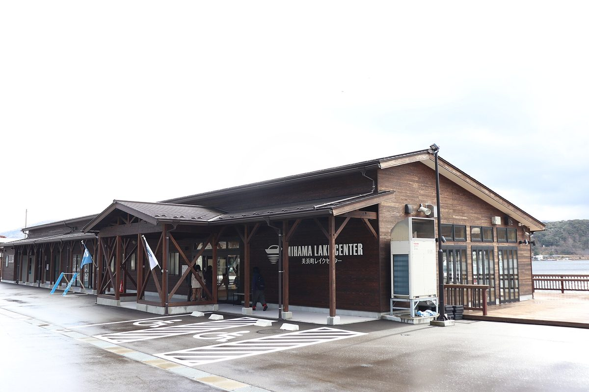

일본 후쿠이 미하마 정, 호숫가 시설 지붕 태양광으로 충전하는 '전지 추진 유람선' 승객 5만 명 넘어…적자로 출자 법인 물러난 뒤 정이 직영

2023년 4월 개업한 미카타고코 네이처 크루즈, 레이크센터 지붕 태양광→축전지→배로 전기 공급…2025년 1월부터 정 직영으로 여행사 영업·SNS 홍보 늘려
일본 후쿠이현 미하마 정(美浜町)이 운항하는 호수 유람선 '미카타고코 네이처 크루즈(三方五湖ネイチャークルーズ)'의 누적 승객이 5만 명을 넘었다. 이 유람선은 리튬이온 전지로 움직이며, 발착 시설인 레이크센터 지붕의 태양광 패널로 만든 전기를 축전지에 모았다가 배에 공급하는 구조다. 배는 구구시 호·우라미 강·스이게쓰 호 등을 약 50분 동안 돌며 하루 5편 다니고, 요금은 어른 1,980엔, 어린이 990엔이다. 2023년 4월 문을 열 때는 정 등이 출자한 관광 법인 '미카타고코 DMO'가 운영했지만 이용객이 적어 적자가 나자 손을 뗐고, 2025년 1월부터 정이 직접 맡아 여행사 영업과 SNS 홍보를 늘렸다. 정은 지난달 24일 선착장에서 5만 번째 승객 일행 12명을 맞는 기념식을 열었고, 도지마 히데키(戸嶋秀樹) 정장이 햅쌀과 지역 술 등을 선물했다.
시민에너지 관점
누적 승객 5만 명은 공공시설 지붕 태양광이 관광과 지역 경제를 함께 움직일 수 있다는 점을 보여 주지만, 개업 2년도 안 돼 운영 법인이 적자로 물러났다는 사실은 설비보다 누가 어떻게 운영하느냐가 더 중요하다는 점도 드러낸다. 지자체 직영이 결국 세금 부담으로 돌아온다는 우려가 있을 수 있는데, 나가노현 이이다시는 공공시설 지붕을 시민 출자 회사 오히사마 진포 에너지에 오래 빌려주는 방식으로 주민의 돈과 지역의 수요를 함께 묶어 사업을 이어 왔다. 주민이 출자자이자 이용자가 되면 손님을 모으는 일도 지역이 함께 짊어지고, 그 수익은 마을 안에서 돈다. 국내 지자체도 공공시설 태양광을 관광·교통과 엮을 때 처음부터 주민 출자 구조를 함께 설계해야 한다.
출처: 朝日新聞 2026-11-03 기자 서명 없음 원문 보기
福井・美浜町、湖畔施設の屋根の太陽光で充電する「電池推進遊覧船」の乗船者が5万人超…赤字で出資法人撤退後は町が直営
2023年4月開業の三方五湖ネイチャークルーズ、レイクセンター屋根の太陽光→蓄電池→船へ給電…2025年1月から町直営に、旅行会社への営業やSNS発信を強化
福井県美浜町が運航する湖の遊覧船「三方五湖ネイチャークルーズ」の累計乗船者が5万人を超えた。遊覧船はリチウムイオン電池で動き、発着施設レイクセンターの屋根にある太陽光パネルで発電した電気を蓄電池にため、船に給電する仕組みだ。船は久々子湖、浦見川、水月湖などを約50分かけて巡り、1日5便を運航、料金は大人1,980円、子ども990円となっている。2023年4月の開業時は町などが出資する観光法人「三方五湖DMO」が運営したが、利用が伸びず赤字となって撤退し、2025年1月から町が直営に切り替えて旅行会社への売り込みやSNSでの発信を強めた。町は10月24日、船着き場で5万人目となった乗船者の一行12人を迎える記念式典を開き、戸嶋秀樹町長が新米や地酒などを贈った。
市民エネルギーの視点
累計5万人という乗船者数は、公共施設の屋根の太陽光が観光と地域経済をともに動かせることを示す一方、開業から2年足らずで運営法人が赤字で撤退した事実は、設備よりも誰がどう運営するかが重要であることも浮き彫りにした。自治体の直営は結局税負担に跳ね返るとの懸念もありうるが、長野県飯田市は公共施設の屋根を市民出資会社のおひさま進歩エネルギーに長期間貸し出す方法で、住民の資金と地域の需要を結びつけて事業を続けてきた。住民が出資者であり利用者にもなれば、客を集める役割も地域がともに担い、その収益は地域の中で回る。韓国の自治体も、公共施設の太陽光を観光や交通と組み合わせる際は、最初から住民出資の仕組みを一緒に設計すべきだ。
出典: 朝日新聞 2026-11-03 記者名なし 原文を読む
日本福井县美滨町用湖畔设施屋顶光伏充电的"电池推进游船"乘客突破5万人…出资法人因亏损退出后由町直营
2023年4月开业的三方五湖自然游船，由湖畔中心屋顶光伏发电→蓄电池→向船供电…2025年1月起改为町直营，加强对旅行社的推销和社交媒体宣传
日本福井县美滨町运营的湖上游船"三方五湖自然游船"（三方五湖ネイチャークルーズ）累计乘客突破5万人。这艘游船靠锂离子电池驱动，由码头设施"湖畔中心"（レイクセンター）屋顶的光伏板发电，电力先存入蓄电池再供给船只。游船约用50分钟游览久久子湖、浦见川、水月湖等地，每天5班，票价成人1,980日元、儿童990日元。2023年4月开业时由町等出资的旅游法人"三方五湖DMO"运营，但因客流低迷出现亏损而退出，2025年1月起改由町直营，并加强了对旅行社的推销和社交媒体宣传。町政府10月24日在码头为第5万名乘客一行12人举行纪念仪式，町长户岛秀树赠送了新米和当地酒等礼品。
市民能源视角
累计5万名乘客说明公共设施屋顶光伏可以同时带动旅游和地方经济，但开业不到两年运营法人就因亏损退出，也表明比设备更重要的是由谁、如何来运营。有人可能担心地方政府直营最终会变成税收负担，而长野县饭田市通过把公共设施屋顶长期出租给市民出资公司"阳光进步能源"（おひさま進歩エネルギー）的方式，把居民的资金和本地需求结合起来，使事业得以持续。居民既是出资者又是使用者，招揽客人的事也由社区共同承担，收益也在社区内流转。韩国地方政府在把公共设施光伏与旅游、交通结合时，也应从一开始就一并设计居民出资的结构。
来源: 朝日新闻 2026-11-03 未署名 查看原文
Battery-powered tour boat charged by rooftop solar at lakeside facility in Mihama, Fukui, passes 50,000 passengers; town took over running it after investor-backed operator quit over losses
Mikata Goko Nature Cruise opened in April 2023 and draws power from solar panels on the Lake Center roof via storage batteries; under direct town management since January 2025, with more sales to travel agencies and social media promotion
The Mikata Goko Nature Cruise, a lake tour boat operated by the town of Mihama in Fukui Prefecture, Japan, has carried more than 50,000 passengers in total. The boat runs on lithium-ion batteries, and electricity generated by solar panels on the roof of the Lake Center, its departure facility, is stored in batteries and then supplied to the boat. The roughly 50-minute cruise takes in Lake Kugushi, the Urami River and Lake Suigetsu, runs five times a day and costs 1,980 yen for adults and 990 yen for children. When it opened in April 2023 it was run by Mikata Goko DMO, a tourism body funded by the town and others, but that operator pulled out after low ridership left it in the red; since January 2025 the town has run the service directly and stepped up sales to travel agencies and promotion on social media. On Oct. 24 the town held a ceremony at the pier to welcome the 50,000th passenger and a group of 12, and Mayor Hideki Tojima presented gifts including new-crop rice and local sake.
Citizen Energy View
Fifty thousand passengers show that rooftop solar on a public facility can drive tourism and the local economy together, but the fact that the operating company quit over losses less than two years after opening also shows that who runs the service, and how, matters more than the equipment. Some may worry that direct municipal operation simply ends up as a burden on taxpayers, yet the city of Iida in Nagano Prefecture has kept its projects going by leasing public-building roofs over the long term to Ohisama Shinpo Energy, a citizen-funded company, tying residents' money to local demand. When residents are both investors and users, the work of bringing in customers is shared by the community and the income circulates locally. Korean local governments, too, should design resident investment in from the start when they link solar on public facilities with tourism or transport.
Source: The Asahi Shimbun 2026-11-03 No byline Read the original